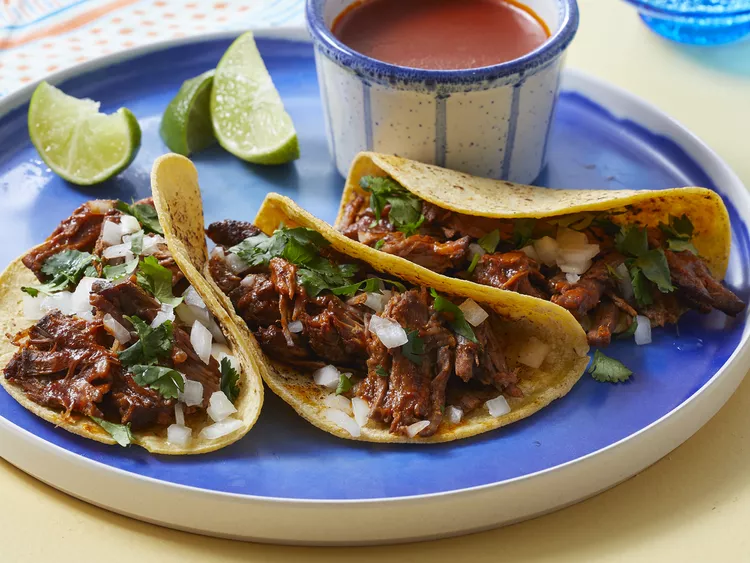

Beef Birria Tacos

Description
Experience the rich flavors of Jalisco-style Beef Birria Tacos, featuring slow-cooked, tender beef braised in a fragrant 3-chile sauce. These tacos are crispy on the outside and bursting with mouth-watering beef and melted Mexican cheese on the inside. Though the recipe takes some time, the delicious results are worth every minute!
Ingredients
Beef Birria
- 3 lbs beef chuck roast (or short ribs)
- 4 dried guajillo chiles
- 2 dried ancho chiles
- 2 dried pasilla chiles
- 1 medium onion (quartered)
- 4 cloves garlic (minced)
- 2 cups beef broth
- 1 tablespoon apple cider vinegar
- 1 teaspoon cumin
- 1 teaspoon dried oregano
- 1 teaspoon ground black pepper
- Salt to taste
- Fresh cilantro (for garnish)
Tacos
- Corn tortillas
- Shredded Mexican cheese (like queso Oaxaca or Monterey Jack)
- Chopped onions (for serving)
- Chopped cilantro (for serving)
- Lime wedges (for serving)
Directions
- Remove the stems and seeds from the dried guajillo, ancho, and pasilla chiles. In a dry skillet over medium heat, toast the chiles for 2-3 minutes until fragrant. Be careful not to burn them. Place the toasted chiles in a bowl and cover them with hot water. Let them soak for about 15-20 minutes until softened.
- Drain the chiles and transfer them to a blender. Add the quartered onion, minced garlic, beef broth, apple cider vinegar, cumin, oregano, black pepper, and salt to the blender. Blend until smooth.
- In a large pot or Dutch oven, heat a small amount of oil over medium-high heat. Add the beef chuck roast and brown it on all sides (about 4-5 minutes per side). Pour the blended sauce over the browned beef, making sure to coat it well.
- Add enough beef broth to cover the meat (about 2 cups). Bring the mixture to a simmer, then reduce the heat to low, cover, and let it cook for 3-4 hours until the beef is tender and easily shredded.
- Once cooked, remove the beef from the pot and shred it using two forks. Return the shredded beef to the pot and stir to combine with the sauce.
- In a separate skillet, heat the corn tortillas over medium heat until warm and pliable. Fill each tortilla with the beef mixture and top with shredded cheese.
- Serve the tacos with chopped onions, cilantro, and lime wedges on the side. Enjoy!